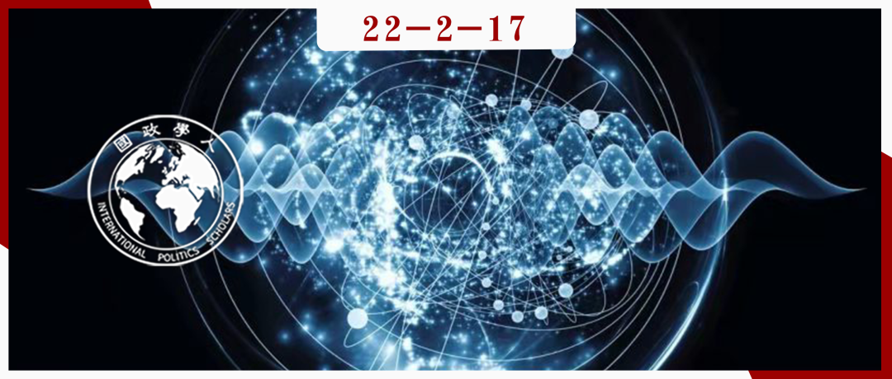

收录于合集

作品简介 ****
作者： Elsa B. Kania，哈佛大学政府学系博士生，新美国安全中心(CNAS)技术和国家安全项目兼职高级研究员。
编译： 杨璐源（国政学人编译员，山东大学东北亚学院）
来源： Elsa B. Kania (2021) China’s quest for quantum advantage—Strategic and defense innovation at a new frontier, Journal of Strategic Studies , 44:6, 922-952
DOI: 10.1080/01402390.2021.1973658

导读
量子技术作为新一轮科技革命的重要争夺点，无疑将成为大国实力比较的重要考量因素。本文从较全面的角度分析了中国在量子技术的发展与规划，既体现中国在量子技术中正处于的优势地位，又体现出中国在将来还会继续巩固、加强优势的志向与期望。
正如本文所说，在百年未有之大变局之际，量子技术被认为对中国的国家安全以及经济发展有着重大意义。这种发展可能改变冲突的性质，甚至打破未来大国之间的军事和战略平衡。由此可见，量子技术在国际关系学科层面的重要性不容小觑。
本文研究论据充分，包括研究对象（政策报告、主要领导人、学科领头人）、研究内容（政策报告、新闻史实）、研究学科（量子技术的发展脉络）等，打破量子技术与国际关系的学科壁垒，为国际关系学者提供了量子技术在该领域的重要启发。
“第二次量子革命为中国提供了从经典信息技术时代的追随者和模仿者转变为未来信息技术领导者的历史机遇”。作为国际关系的学者，在此历史机遇下，了解量子技术、剖析掌握量子技术优势对于国际关系权力转移、世界格局的变化有着重要意义。
摘要
中国将量子科技作为国家安全和发展的重要前沿。 迄今为止，在国家支持和资助以及人才的引进和培养的推动下， 中国的量子科技研究已经在学科内处于领先地位。 这方面的快速发展可以为中国不断发展的创新生态系统提供有价值的例证。中国的战略旨在打造更加一体化的科技生态系统，有助于推动军民两用发展。该领域的共享框架提供了一种方法来考虑促成国防创新的因素，本案例的研究则主要借鉴了此框架。展望未来，这些进展可能对未来中美之间的战略平衡产生重大影响。
编译
中美战略竞争的未来轨迹将受到新兴技术进步的影响，这些进步可能有助于新产业的增长并实现未来的军事能力。在科学和技术的快速发展催生新工业革命之际，中美竞争一直在加剧。在中国看来，这是一个“百年未有之大变局”的时代，包括由这些技术推动的变革转型会加速权力转型的潜力。 其中，量子技术被认为对中国的国家安全以及经济发展有着重大意义。这种发展可能改变冲突的性质，打破未来大国之间的军事和战略平衡。
当前，中国的创新雄心正朝着新的方向发展,旨在进行原创性、颠覆性的创新。中国将这一时刻视为一种历史性机遇。中国将“创新驱动”发展置于其战略乃至意识形态的核心中。在中国实现民族复兴的过程中，科技强国被视为这一议程的重要内容。
正如在中国经常被称为“量子之父”的潘建伟所说， “第二次量子革命为中国提供了从经典信息技术时代的追随者和模仿者转变为未来信息技术领导者的历史机遇”。 他敦促中国必须掌握能够在世界形成先发优势的颠覆性技术，从而引领颠覆性技术的未来发展。
同时，中国的军民一体化战略寻求打造更加融合的技术发展生态系统，包括科研合作、利用商业发展实力等形式。
01
中国的创新势在必行
创新已成为中国民族复兴议程中的首要任务。尽管长期以来科技都被认为是国家发展的关键驱动力，但从2012年之后，创新的重要性进一步凸显。特别是2016年国务院发布的《国家创新驱动发展战略纲要》，将创新驱动提升为中国增长和复兴轨迹的展示。这一战略强调， 科技在历史上一直是大国兴衰的关键。
如今， 中国认为，中国崛起为一个大国的前景将取决于其创新能力的提高。尤其是新兴技术的迅速发展，被认为正在催化一场新的工业革命，带来了特殊的挑战和机遇。 因此，中国一直在推行一系列政策，旨在利用这种颠覆性技术的潜力，弥补技术劣势。中国政策的显著趋势之一是逐步增加对基础研究的支出，并设立针对新兴产业的投资指导基金。中国政府还实施了一系列计划和举措，旨在培养和聘用顶尖人才。与此同时，军民一体化作为国家战略，旨在协调和利用量子科学和技术等被认为对中国经济和军事转型至关重要领域的关键协同效应。 事实上，量子科学和技术已经成为“十三五”规划(2016-2020)的发展方向，并被确认为“十四五”规划(2021-2025)及以后的重大项目。 这些努力已经开始产生显著的回报。根据潘建伟的概括评价，中国目前“在量子通信的研究和应用方面处于全球领先地位，在量子计算方面与发达国家处于同一水平线上，在量子精密测量方面发展迅速”。
02
催化因素
（一）网络安全问题
**
**
在过去的十年里，量子科学和技术学科已经成为中国创新议程的核心重点。 支持研发这一科学前沿的最初动力来自网络安全威胁。 2013年5月，美国国家安全局(NSA)爱德华·斯诺登(Edward Snowden)泄露的信息加剧了中国对信息安全的担忧。这一事件揭示了美国在中国的情报能力和活动的程度，从而提高了对中国易受外国网络入侵活动影响的认识。中国科学家，尤其是潘建伟，主张将量子通信作为一种提供名义上“无条件”安全的手段。值得注意的是，斯诺登泄露的文件还披露，美国国家安全局正在通过一个名为“攻克难关”(Penetrating Hard Targets)的项目投资量子计算的发展，目的是获得破解加密的能力。
这一事件增强了人们对量子科学和技术对国家安全的重要性的认识，同时也加剧了中国对落后于美国能力的担忧。因此，使用量子密码学来实现更安全的通信成为了一种潜在的解决方案。
（二）优先考虑声望和领导力
**
**
在不安全与机遇的双重推动下，量子科学吸引了中国最高领导层的注意。中国强调量子科学和技术在中国国家安全特别是网络安全中的战略重要性。 量子技术是中国新一轮科技政策和规划的重点之一。 截至2015年11月，量子计算和通信被列入到2030年重点突破的重大科技项目名单。2016年4月,潘建伟在量子技术方面取得的进步被广泛宣传。
2016年8月，中国发射了世界上第一颗量子卫星“墨子号”，中国的量子科学议程首次引起了世界的关注。媒体对这一里程碑进行了突出报道，称赞其为中国科技实力的象征，同时登上了世界各地的新闻头条。虽然量子卫星本身并不是一个巨大的突破，但墨子号的发射创造了一个平台，提供了一种独特的能力，为未来的实验进展奠定了基础。此后，中国政府再次强调推进量子通信以及其他关键网络和信息技术领域自主创新的重要性。随着全球对量子技术的关注和国际竞争的加剧，中国将继续优先考虑这一领域，并认识到中国作为先行者的独特地位。
03
投入因素
（一）计划与政策
**
**
中国成为量子信息科学的领先国家，得益于强有力的国家支持。 20世纪90年代至21世纪初，国家高技术研究发展计划(“863计划”)和国家重点基础研究发展计划(“973计划”)率先对量子信息科学基础和应用研究提供支持。截至2015年5月，《中国制造2025》倡议已将量子计算的进展列入其优先考虑的领域，属于“下一代信息技术产业”的范畴。截至2016年2月，国家重点研发计划取代了863计划和973计划，为量子信息科学的研究提供了资金。
对中国来说，量子计算和通信已经被作为一个主要的“旗舰”项目引入，并被列为展望2030年的五年计划的优先推进项目。该倡议的努力方向包括大都市和城际自由空间量子通信技术，通用量子计算原型的开发和制造，以及实际使用的量子模拟器的开发和制造。
（二）融资和投资
虽然量子科学和技术的研究与发展的资金水平难以估计，这些投资的回报也仍有待观察，但中国在这一学科的可用资源是相当可观的，并可能会继续增加。 根据参与这些项目的中国科学家的估计，过去十年的量子信息研究资金主要来自中央和地方政府。鉴于对基础研究的关注日益增加，未来几年的资助可能会继续增加。
除了国家项目和资金， 地方和省级项目也越来越多。 例如，2017年12月新成立的安徽量子科学产业发展基金宣布计划投入100亿元人民币(近16亿美元)用于量子计算、通信和测量。山东省也宣布了“量子技术创新发展规划（2018-2025年）”计划，成立了济南量子研究所，并设立了一个新基金，以推动该学科和新兴产业的发展。深圳宣布，截至2021年，计划在未来5年对包括量子技术在内的新兴技术的研发投资超过1080亿美元。重庆、浙江、广东等地也在努力促进量子产业和基础设施建设。
（三）人力资本资源
**
**
培养和招募世界级的量子科学人才将是中国未来在该领域发展的关键决定因素。 中国政府通过广泛的国家计划，致力于招募顶尖人才。其中包括各类人才计划。潘建伟本人正是在维也纳大学(University Of Vienna)的安东•泽林格(Anton Zeilinger)的指导下开始涉足这一领域的。
自21世纪初以来，在潘建伟的领导下，许多中国学生被派往国外，领导研究项目，学习重要技术。最终，那些在本土发展中处于中心地位的人回到了中国，成为中国量子创新领域的关键人物。中国科技大学和其他顶尖研究机构的团队所取得的持续成功反映出，与其他领域相比， 中国在量子科学方面的进步对技术和人才转移的依赖程度要低得多。
04
制度因素
（一）研究合作
**
**
中国在量子科学方面的研究已经证明了由顶尖大学组成的不断发展的生态系统的力量，这些大学一直处于一系列富有成效的合作伙伴关系的中心。 中国量子信息科学最初的核心是量子信息重点实验室，该实验室于2001年在中国科学技术大学建立，由中国科学院主办。与此同时，潘建伟在维也纳大学获得博士学位后回到中国。他在中国科技大学的研究将与他的导师、曾经的教授Anton Zeilinger博士竞争，在量子通信领域取得进展。
中国在量子密码学和通信领域的领导地位，以及量子计算领域的初步进展，反映了完全的自主创新，但国际合作的影响以及国家吸引顶尖人才的计划，也是一个因素。
（二）新的机构和伙伴关系
**
**
中国在量子科学方面加倍研究的努力，充分利用了旨在推进前沿研究的新机构的创建。 值得注意的是，中国政府已经从2017年9月开始在安徽省建设量子信息科学国家实验室，旨在成为世界上最大的量子研究设施。
随着量子技术朝着有前景的应用方向发展，中国企业也积极加入了这场竞争。2015年，中国科学院首次与阿里巴巴的云计算部门阿里云合作，创建了阿里巴巴量子计算实验室，旨在开展前沿研究，实现量子计算的实际应用。他们对量子计算的追求旨在利用阿里云在经典计算算法、结构和云计算方面的技术优势，以及中国科学院在量子计算、量子模拟计算和量子人工智能方面的技术优势。
05
输出因素
（一）量子密码学与通信
**
**
中国正在迅速实现量子通信，以确保敏感的国家、军事和工业通信的安全。 与此同时，中国的研究人员也在不断取得持续的实验进展，以增强其效用。潘建伟说，“正是因为在量子信息的实用价值尚未得到充分展示的早期阶段，我们率先在国际上抓住机遇，推动我们最终在量子通信领域取得了国际领先地位。”
（二）量子计算
虽然中国在量子计算方面似乎落后于其他国家， 但中国科学家也正在成为实现这一目标的全球竞争中的积极竞争者。 正如量子科学家郭光灿所强调的那样，“中国科学家一直在全力以赴地赢得量子计算机开发的全球竞赛”。
例如，2016年8月，中国科技大学的科学家宣布他们开发了一种半导体量子芯片，可以实现量子操作和信息处理，也实现了对纠缠量子粒子的制备和测量方面的突破。2017年3月，中国科大科学家成功实现了10个超导量子位的量子纠缠，这是迈向未来量子计算的重要一步。一组中国科学家实现了20个量子位的纠缠，持续了187纳秒，超过了2019年8月12个量子位的记录。
虽然学术界处于中国量子科学的前沿，但随着量子技术的不断进步，工业界可能会进入领先地位。 截至2018年，百度也在量子计算领域启动了自己的项目和投资，即量子计算研究所。腾讯很快在同一年建立了自己的量子实验室，据其网站称，该实验室旨在“将快速增长的量子信息技术领域的基础理论与实际应用联系起来”。在2020年，百度发布了量子机器学习开发工具包Paddle Quantum，声称从现在起量子领域的研究人员可以使用Paddle Quantum来开发量子人工智能。此外，华为也希望通过其云平台进行量子模拟，利用量子算法。
（三）量子精密测量
**
**
中国在量子精密测量领域的进展可能会在工业和军事领域得到直接应用。 正在进行的创建量子导航能力(即量子罗盘)的计划可能会直接用于海军和海上行动，也可能适用于探测潜艇的技术。尽管存在局限性，量子传感和探测的进步也保证了探测前所未有的精确度和灵敏度。
06
变革中的中国国防创新模式
中国对量子创新的追求可能预示着前沿技术创新新范式的出现。 在未来几年甚至几十年，中国的军民一体化战略可能成为其国防创新的一个决定性特征和关键优势。特别是量子科学和技术中已经被证明的能力，开始打破障碍，促进军事、学术界和工业界之间的合作，表明这将是该领域未来的一个显著特征。量子导航原型的开发，以及海洋环境中量子通信的潜在应用，凸显了曾经被认为是科幻小说的进步的现实。
在这一点上， 战略家们开始推测量子技术对未来战场的影响。 例如，量子密码学被认为是一项关键的新兴技术，可以“为信息作战注入新的活力”。许多学者强调了量子计算的巨大潜力的潜在进攻性应用，包括破解密码学。尽管仍存在技术挑战，但军事科学家指出，从长远来看，量子计算似乎具有“无限”的潜力。展望未来，量子技术不仅通过“不可破解”的密码学和计算能力的进步提高了安全性，而且还实现了高精度导航和抗干扰成像。预计量子通信的使用将提高战场信息处理能力，使建设一个更强大的战斗系统成为可能。
量子技术的不断发展将引发中国军事战略家的密切关注。 另一位中国军官表示，随着信息时代向“量子信息时代”的“飞跃”，这些技术会被认为是一个大国综合国力、科学水平和军事实力战略竞赛的“前沿”。中国人民解放军已经敏锐地意识到，适应和利用这些领域的进步至关重要。尽管解放军在从试验到实施这些新兴技术的过程中将面临相当大的挑战，但这些初步成果可能预示着更大的进展。
中国正在优先考虑量子技术方面的国防和军事创新，而在这些领域，美国还没有意识到，也可能无法取得决定性的优势。由于美国被视为一个强大的对手，是进行比较的关键指标，在安全困境不断恶化的背景下，美中战略竞争仍将是中国技术发展和军事现代化的主要驱动力。从历史上看，这种不安全感一直并将继续是中国创新的主要驱动力。然而，鉴于中国在量子科学和技术方面的优势，中国通过寻求在量子创新方面大幅转向超越获得竞争优势的机会不能被忽视。
审校 | 孟晓宇 唐一鸣
排版 | 彭雯昕 臧泽华
文章观点不代表本平台观点，本平台评译分享的文章均出于专业学习之用, 不以任何盈利为目的，内容主要呈现对原文的介绍，原文内容请通过各高校购买的数据库自行下载。

国政学人
支持学术公益与知识传播
微信扫一扫赞赏作者 __赞赏
已喜欢，对作者说句悄悄话
取消 __
发送给作者
发送
最多40字，当前共字
上一页 1/3 下一页
长按二维码向我转账
支持学术公益与知识传播
受苹果公司新规定影响，微信 iOS 版的赞赏功能被关闭，可通过二维码转账支持公众号。